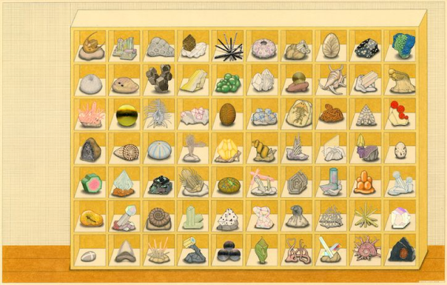

MACHINES AND ROBOTS
QUICK NOTE (TO SELF)
What this page means when it refers to machines: Machines are the technologies that surround us, spanning from high-tech AI, to low tech toilets, and the systems that birth and nurture these objects.
It’s important to note that whichever shame-category a technology may fall under, “...choices [of the creator] tend to become strongly fixed in material equipment, economic investment, and social habits. [...] For that reason the same careful attention one would give to the rules, roles, and relationships of politics must also be given to such things as [...] the tailoring of seemingly insignificant features on new machines”
Creator's hands POV. You adjust the creator character in order to adjust the creator's output. Puzzle like objective / 'Achievements' that pushes players to get the creator to create all vastly different types of outputs. Connection/abstract word game type thing within the hands.
Achievement list from the game, showing all the various types of shame that can be infused into our technologies and robots
“Technology” and “hi tech” are not synonymous, and a technology that isn’t “hi,” isn’t necessarily “low” in any meaningful sense. [...]
We have been so desensitized by a hundred and fifty years of ceaselessly expanding technical prowess that we think nothing less complex and showy than a computer or a jet bomber deserves to be called "technology " at all. As if linen were the same thing as flax — as if paper, ink, wheels, knives, clocks, chairs, aspirin pills, were natural objects, born with us like our teeth and fingers – as if steel saucepans with copper bottoms and fleece vests spun from recycled glass grew on trees, and we just picked them when they were ripe…”
Interactive diagram of a cyborg. Hover over different parts of the body and it will reveals aspects of the conclusion (HUMAN HAND CURSOR, TOUCHING ROBOT BODY)